GeoMoose gyorstalpaló¶
A GeoMoose egy böngésző alapú térképes keretrendszer megosztott kartográfiai adatok megjelenítéséhez. Különösen hasznos a térbeli és nem térbeli adatok kezelésére egy országon, városon vagy önkormányzati irodán belül (ahonnan a GEoMoose származik).
Contents
Kezdjen neki¶
A GeoMoose egy GIS adatportál kezelő keretrendszer. A Live DVD-re telepített változat egy minta konfiguráció mely egy több rétegből álló példa.
Menjen a „Browser Clients” mappába az asztalon.
Kattintson a „Start GeoMoose” ikonra. Ez elindítja az alapértelmezett böngészőt, mely a megfelelő helyre navigál automatikusan.
A GeoMoose példány demó interfésze jelenik meg egy honlapon.
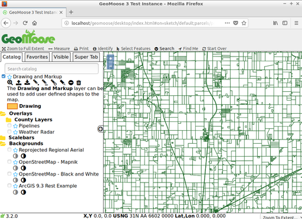
A fent látható interfész a következőket tartalmazza:
- Egy banner sor
- Egy eszközsor
- Egy térkép ablak a következőkkel
- Egy navigáció és nagyítás vezérlő
- Egy oldal menü a következőkkel:
- Egy „Jump to” helyek legördülő listája
- „Catalog”-gal kezdődő vezérlő fülek, a réteglista megjelenítéséhez. Szükség szerint további fülek jelennek meg: egy „Information”, egy „Custom” fül és továbbiak.
- Egy lábléc sáv ezekkel:
- Több koordináta mező ezekhez: X.Y (helyi koordináták), hosszúság/szélesség (decimális)és Egyesült Államok Nemzeti Rács (USNG)
- Egy szerkeszthető legördülő lista, melyből a megjelenítés méretarányát választhatja ki vagy beírhatja.
Hely azonosítás a GeoMoose-ban¶
Egy helyet azonosíthat a felhasználói felületen az „identify” („i” egy körben ikon) gombra kattintva a felső eszközsorban, majd a térképen kattintson az azonosítandó pontra.
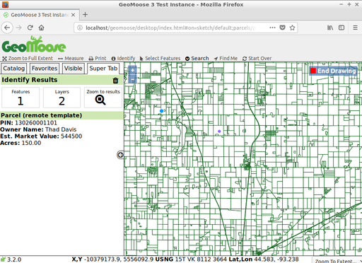
A katalógus a térkép nézet bal oldalán „Super Tab”-bá változik - egy hely, ahol a GeoMoose egy művelet eredményeit megjeleníti meg vagy további adatokat kér. Ebben az esetben a lekérdezés eredményét jeleníti meg az össz aktív és lekérdezhető rétegen arra a pontra ahová térképen kattintott.
Mérés a GeoMoose-ban¶
A GeoMoose mérőeszköz lehetővé tesz pont mérést (a kattintott pont koordinátái), távolság mérést több részből álló törtvonal mentén és zárt idom területének mérését. Kattintson a felső eszközsorban a mindkét végén nyilas vonalra a mérőeszköz indításához. Ezután válassza ki, hogy pontot, vonalat vagy zárt idomot akar mérni. Majd kattintson a térképre ahonnan a mérést indítja. Egy pont méréséhez csak kattintson a pontra a térképen. Egy törtvonal vagy zárt idomméréséhez kattintson sorban a töréspontokra. Duplán kattintson a törtvonal/zárt idom végpontjára.
Megjegyzés: mérhet a térképen létező elemeket is (ha egy vektor réteg része és korábbi lekérdezés eredménye tartalmazza) nélkül, hogy kézzel végig kellene kattingatni.
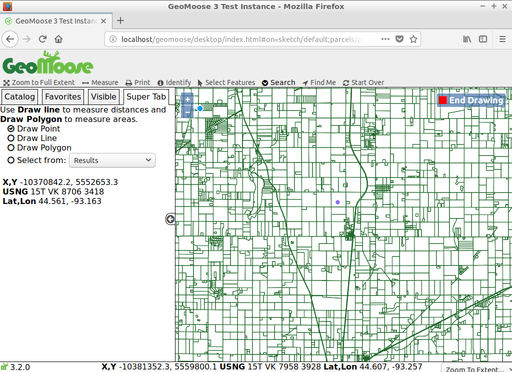 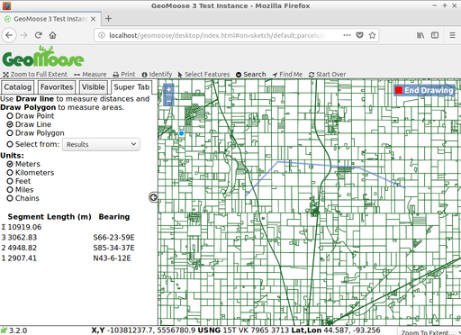 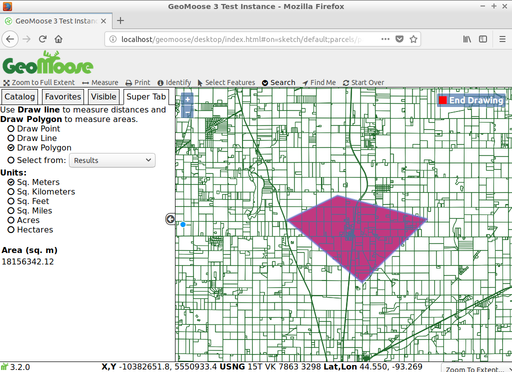
Elemek kiválasztása¶
Elemeket szelektálhat ponttal, vonallal, zárt idommal vagy egy létező elemmel. A kezdéshez kattintson a „Select Features” ikonra (egér kurzor ikon) válassza a pontot, vonalat, zárt idomot és kezdje el a térképen a szelekcióhoz a rajzolást. A rajzolás befejezéséhez az utolsó pontba duplán kattintson. Ha szeretné, akkor módosíthatja a kiválasztást a „Modify Feature” beállítással.
Lehetősége van a szelekciót a rajzolt elem környezete alapján, Az alapértelmezett környezet „0”, ami nem változtat semmit. Pozitív érték megnöveli a rajzolt elemet ezzel a távolsággal, negatív érték csökkenti a rajzolt elem méretét.
Válassza ki melyik rétegről szeretne szelektálni a „Query Layer” legördülő listából. Megjegyzés: nem minden réteg használható az elem kiválasztás eszközzel. Ahhoz, hogy szelektálható legyen a rétegnek vektor rétegnek kell lennie és a konfigurációban kiválaszthatóvá kell tenni.
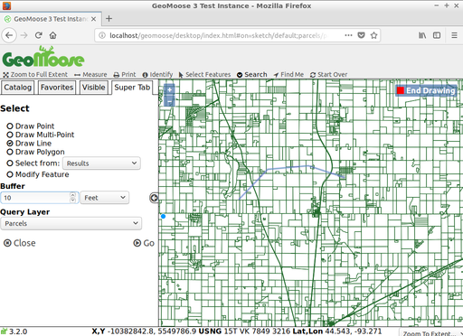
Végül kattintson a „Go” gombra az elemek kiválasztásához. A GeoMoose Egy összesítést ad a szelektált elemekről a Super fülön, emellett kiemeli az elemeket a térképen és a kiválasztott elemek attribútumait megjeleníti.
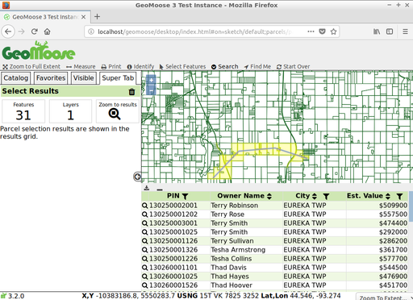
Ha az egeret a táblázat egy sorára húzza a megfelelő elem kiemelve jelenik meg a térképen. A tölcsér ikont táblázat fejlécében az eredmény további szűrésre használhatja, a háromszög ikont a fejlécben az eredmények rendezésére használhatja. Az eredményeket CSV fájlként letöltheti a táblázat bal felső sarkában található letöltés ikonnal.
Keresés¶
Attribútumok alapján is kereshet az elemekre. A kezdéshez menjen a „Search” menüre az eszközsorban és aztán kattintson a „Search Parcels” ikonra. Írja be a keresési feltételeket a Super fülön és kattintson a „Go” gombra.
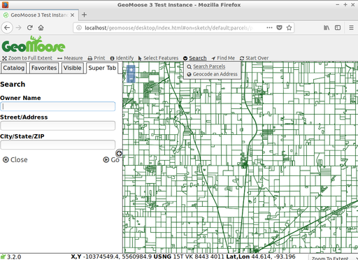
A következő képernyőkép egy keresést mutat minden olyan telekre, melynek tulajdonosának neve tartalmazza a „frank” részt.
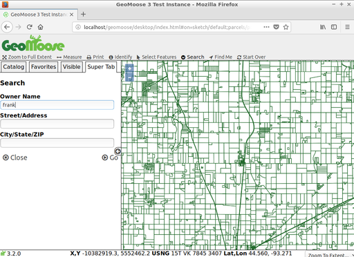
Három eredmény jelenik meg a listában és kiemelve jelennek meg a térképen.

A nagyító ikonra vagy a telek azonosítóra kattintva ránagyít az adott elemre, ahogy a következő képernyőképen bemutatjuk.
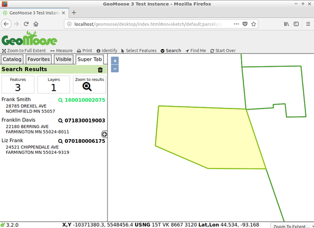
Nyomtatás¶
A következő képernyőkép mutatja be, hogyan néz ki a Print eszköz a GeoMoose demóban. Amikor a Print eszközre kattint, egy párbeszédablak jelenik meg, melyben a nyomtatott térkép címét, a papírméretet és orientációt, a nyomtatás felbontását és a nyomtatandó részletről egy előnézetet láthat.
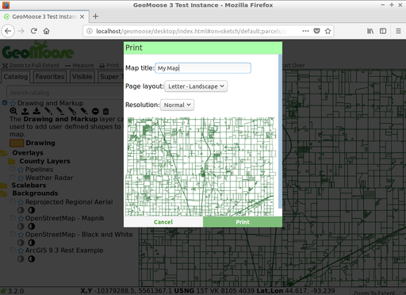
A párbeszédablakban a Print gombra kattintva Egy PDF dokumentumot generál amit megnyithat vagy elmenthet.
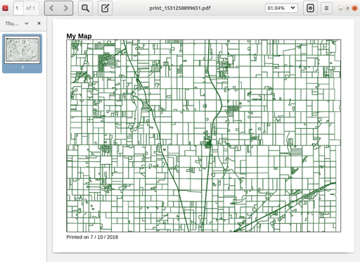
Mi a következő?¶
Egy csak az első lépés az úton a GeoMoose használatában. Sokkal több funkciója van amit kipróbálhat.
GeoMoose projekt honlap
GeoMoose oktatóanyag